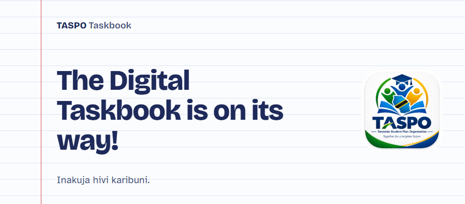

Why we're replacing chalk with whiteboards in Tanzanian classrooms
Chalk has been part of classroom life for generations. Here's why we think it's time for a cleaner, healthier alternative, and what the switch really involves.
Read article →Good students aren't just taught well, they learn to organise themselves. Meet the TASPO Taskbook, our tool for building that habit early.

Ask any successful student what helped them most and many will point to a teacher who believed in them. Ask a few more questions, though, and you'll often hear something else: at some point, they learned how to organise themselves.
They learned to break a big task into small steps. To plan their week. To notice when they were falling behind and do something about it. These skills are rarely taught directly, yet they shape how well students do at school and long after it.
That's the idea behind the TASPO Taskbook.
The Taskbook is a planning tool for students. It helps them to:
It's designed to be simple enough for younger students to use on their own, and flexible enough to grow with them as they move up through school.
When students plan their own learning, they stop waiting to be told and start taking charge.
Classrooms in Tanzania are often large, and teachers have limited time for each student. A student who can plan, organise and keep track of their own work gets more out of every lesson and every hour of homework.
Planning also builds confidence. Ticking off a task you set yourself is a small win, and small wins add up. Over time, students begin to see themselves as people who can set a goal and reach it. That's a mindset that serves them well at school, at work and in life.
The Taskbook is the first step in a wider TASPO digital platform that we're developing in phases. Over time, the platform will bring students, teachers, clubs and schools together in one place, and will make it easier to:
We're starting with the student, because everything else is there to support them.
The TASPO Taskbook is currently in development. We'll share updates here on the blog as we test it with students and teachers and as we get ready to roll it out to the schools we work with.
If you're a school, an organisation or a partner who would like to be involved, or if you'd like to support its development, please get in touch.
Chalk has been part of classroom life for generations. Here's why we think it's time for a cleaner, healthier alternative, and what the switch really involves.
Read article →A donated whiteboard doesn't simply appear in a classroom in Tanzania. Here's the journey, and why careful logistics make every donation count.
Read article →Whether you give, partner, donate equipment or simply share our story, you help Tanzanian students learn in better conditions.